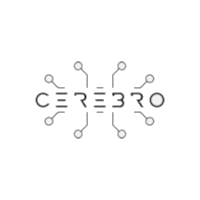
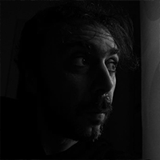
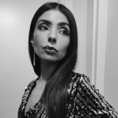
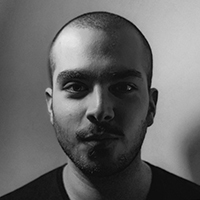

Loading...
| 1974-2006 | Born in Potenza, I graduated in Foreign Languages and Literature, over the years I have experimented with different forms of expression, writing, video, digital art. |
| 2006 | Premio Fastshort – Dams Film Festival con Il tempo della fioritura |
| 2010–2014 | Fouder of a Video Production I've writed, shooted and produced: video clips, documentaries, commercials, corporates, two episodes of a si-fi web series. |
|
DAMASH - Vizio e regole
Protocollo S ECNEPHIAS - Vipra Negra |
|
| 2015–2018 | Trasfered in Bologna I've worked on communication production, territorial promotion, as screenwriter, director and videmaker |
|
COVER - Jóga
FORMES EMBRYO |
|
| 2020 - 2024 | TRASFERIMENTO A MILANO |
|
Finalista“Un futuro possibile, plausibile, auspicabile”· Spazio Eclissi, Milano
MEET Digital Culture Centre · Innocult Program · Avvio progetto Aqvam |
|
| 2021 | Poetry suggested the path, cinema showed it to me, today I work with AI, data, CGI and with any tool I return that sense of wonder in front of the forms that can take the beautiful and the unknown. |
| 2023 | Pubblicazione Neutropoli, Zacinto Edizioni |
| 2024 | Performance · Cantiere Poetico per Santarcangelo |
| 2025 | Spine Festival (Padova) · Inverso infesta (Roma) · Docenza MIUR |




FABIO VOLPI (a.k.a. dies_)
Music Author, Multidisciplinary Collaborator
MARILINA CIACO
Author texts for poetic vitual environments, content editor.
GIORGIO FUNARO
Multidisciplinary Collaborator
English: He is a multidisciplinary artist specializing in Motion & Visual Design and Light Art. He creates motion design for events, brands, musicians, and festivals, using generative software to create high-level artistic visuals and 2D/3D software for more traditional works.
As a Light Artist, he creates audio-visual and light installations for events, exhibitions, and shootings. He always tries to use an immersive approach for the project with a physical part.
DAVIDE DEL MONTE
...
CEREBRO
Idea Generetor
CRISTIAN RUBINI
...
licensed under Creative Commons Attribution
http://creativecommons.org/licenses/by/4.0/
"Lowpoly People + Waldo" https://skfb.ly/6zqCE by Loïc Norgeot
"WIP - Lowpoly People - 1" https://skfb.ly/6yXXZ by Loïc Norgeot
"Freebie - Lowpoly People" https://skfb.ly/6SwtS) by Studio Ochi
by Dies_
Inner Tune from Pixabay - hearts_01
Grand_Project from Pixabay - hearts_02
{kind=link}